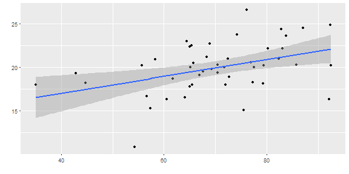
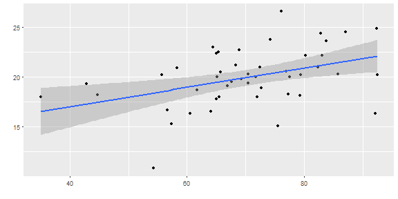

- easy to use
- easy to interpret
- applicable for a huge variety of problems
- fairly accurate
\(\Rightarrow\) among the most widely used algorithms by data scientists
## Warning: package 'ggplot2' was built under R version 3.2.5

Mohammad Tahseen
\(\Rightarrow\) among the most widely used algorithms by data scientists
## Warning: package 'ggplot2' was built under R version 3.2.5

##
## Call: glm(formula = Infant.Mortality ~ Fertility + Education + Catholic,
## data = swiss)
##
## Coefficients:
## (Intercept) Fertility Education Catholic
## 7.867371 0.159631 0.103403 -0.006246
##
## Degrees of Freedom: 46 Total (i.e. Null); 43 Residual
## Null Deviance: 390.3
## Residual Deviance: 298.3 AIC: 230.2

glm (
Infant.Mortality ~ Fertility
+ Examination,
data = swiss
)$coefficients
## (Intercept) Fertility Examination
## 8.71870014 0.13718600 0.09710969
glm (
Infant.Mortality ~ Examination,
data = swiss
)$coefficients
## (Intercept) Examination
## 20.62898680 -0.04162888